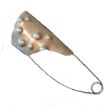
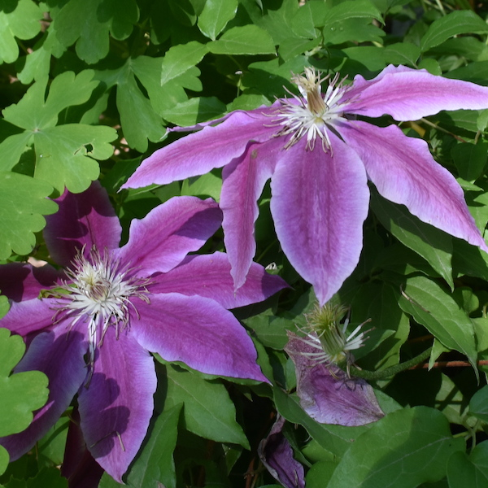
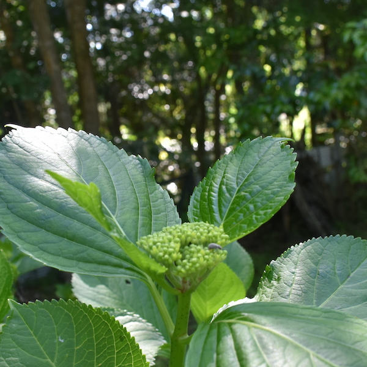
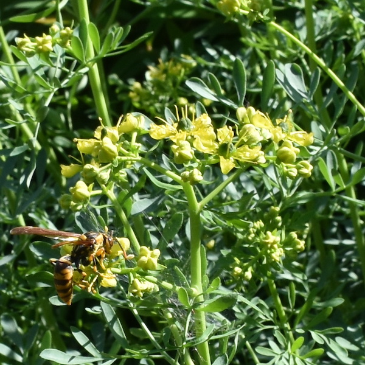
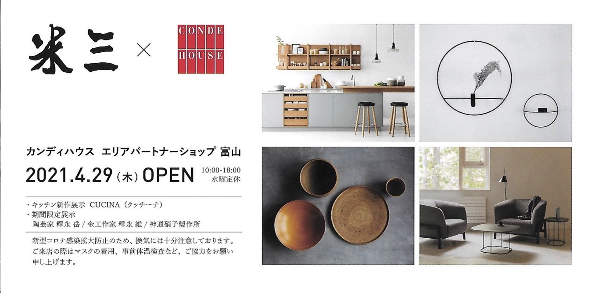
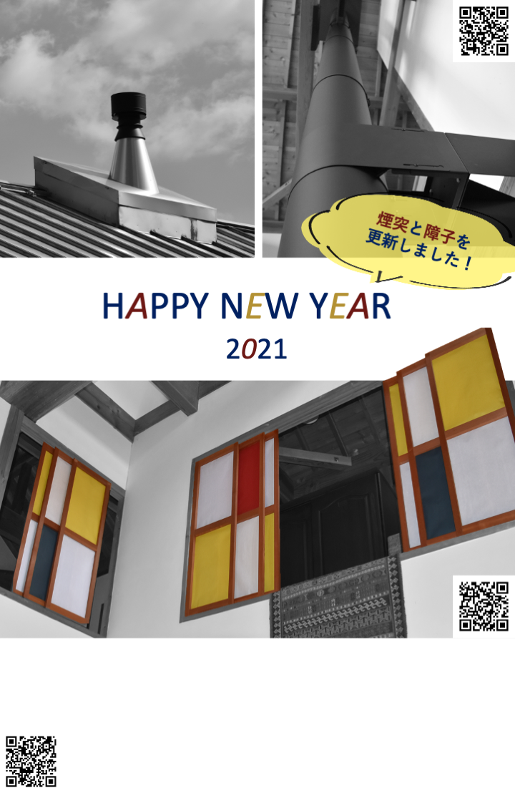

丸５年の節目を持ちまして・・・
丸５年の節目を持ちまして・・・
One’s Way[ワンズウェイ]は、それぞれのあたりまえ、その人らしさを大切にするというコンセプトのもと、One’s Wayに集う人々をこのwebサイトやイベントの開催等を通じて応援してきました。2017年元日にwebサイトを公開してから5年の節目となる2021年の大晦日を持ちまして、一旦webサイトの更新を休止することとしました。併せて、blogの更新も12月26日で休止しております。
この間、One’s Way[ワンズウェイ]に集っていただいた方々、webサイトやblogをご覧いただいた方々に心よりお礼申し上げます。
One’s Way[ワンズウェイ]が我が家の屋号であることは今後も変わりありません。お時間が許すようでしたら、お気軽にお立ち寄りください。引き立てのコーヒーとありあわせのお菓子で、おしゃべりを楽しめれば幸いです。

recommendを更新しました！
本日、recommendのページを更新しました。
天野一男さんの廃業のお知らせとみどり共同購入会のNew Faceの紹介です。
recommendをご覧ください。

全国あちらこちらでタウの木さんの作品をご覧になれます！
One’s Wayのイベントでお世話になった「タウの木」さんの作品を全国各地でご覧いただけます。
コロナ禍で外出が難しい日々が続きます。感染拡大が収まりましたら、感染対策をなさってのぞいてみられてもよいかもしれません。
心が震える作品との出会い
誕生してからずっと
待っていてくれたのだろうか。

詳しくは「タウの木」さんのサイトをご覧ください。
タウの木 中村ヨウイチさんについては、 recommendでも紹介しています。

ロックなガラス展ーガラス工房マル6周年記念展ーのご案内！
「ガラス工房〇マル」さんの個展のご案内です。
2021年7月1日～15日（除く水曜）
11：00～17：00
"いろやギャラリー"にて・・・・
詳しくはガラス工房○マルさんのfacebookページ をご覧ください。
をご覧ください。
ガラス工房○マルさんについては、 recommendをご覧ください。

One’s Wayの庭でお花の鑑賞をご自由にどうぞ！
昨年に引き続き、新型コロナウイルスの感染拡大のため、自由な行動がままならない毎日が続いています。みなさまいかがお過ごしでしょうか？
One’s Wayの庭では紫陽花が蕾をつけ始めました。ルーの花にはミツバチがやってきて、蜜を吸っています。
イベントの開催は難しいですが、どうぞご自由にご鑑賞ください。



感染対策をバッチリとして、デッキ越しにおしゃべりなどできるといいですね。

米三さんがカンディハウスのエリアパートナーショップに！
富山の中央道り「D-SQUARE」（旧米三本店）内にCONDE HOUSE エリアパートナーショップがオープンします。心地よい暮らしの提案をいただけることでしょう。

米三さんについては、 recommendもご覧ください。

タウの木 中村ヨウイチさんの作品を金沢でご覧になれます！
”Cafe & Gallery ミュゼ”で開催中の『ペケのアトリエさんぽ』にタウの木さんが出品されます。
会期／2021年3月18日(木)～3月21日(日) 12〜19時※最終日は17時まで
絵画、革、陶器に混ざって、タウの木の中村ヨウイチさんによる金属の作品が心地よい空間を作っています。
詳しくはCafe & Gallery ミュゼさんのfacebook またはOne's Wayのブログ
またはOne's Wayのブログ をご確認ください。
をご確認ください。
タウの木 中村ヨウイチさんについては、 recommendもご覧ください。

訃報 ・ ・ ・
One’s Wayのイベントでご協力いただいたROMANの上野茂さんが先月お亡くなりになりました。
昨年11月「秋の叙勲」を受賞されてから２ヶ月後のことでした。自転車業界では初めての受賞とのこと。長年、自転車界繁栄にご尽力されていました。
40年近いおつきあい。夫婦で計10台の自転車フレームを作ってもらいました。
上野さん亡き後もROMANの繁栄をお祈りしています。（合掌）

One’s Wayを本年もよろしくお願いいたします。
あけましておめでとうございます。

昨年は、新型コロナウィルスの影響でみなさまにお会いすることが難しい1年でした。感染拡大が収束し、One's Wayにお気軽にお越しいただける日が早く来ることを願っています。